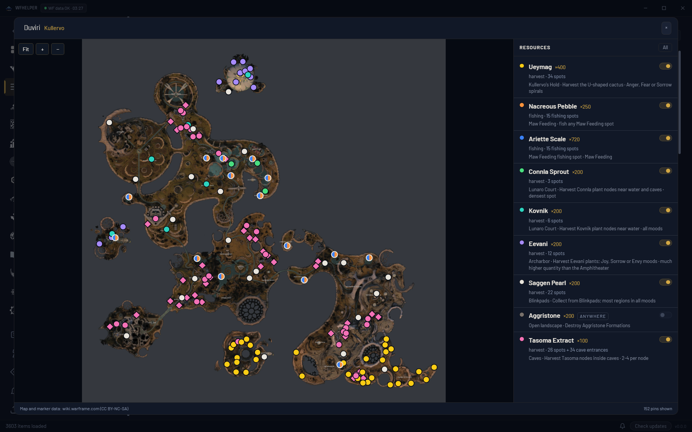
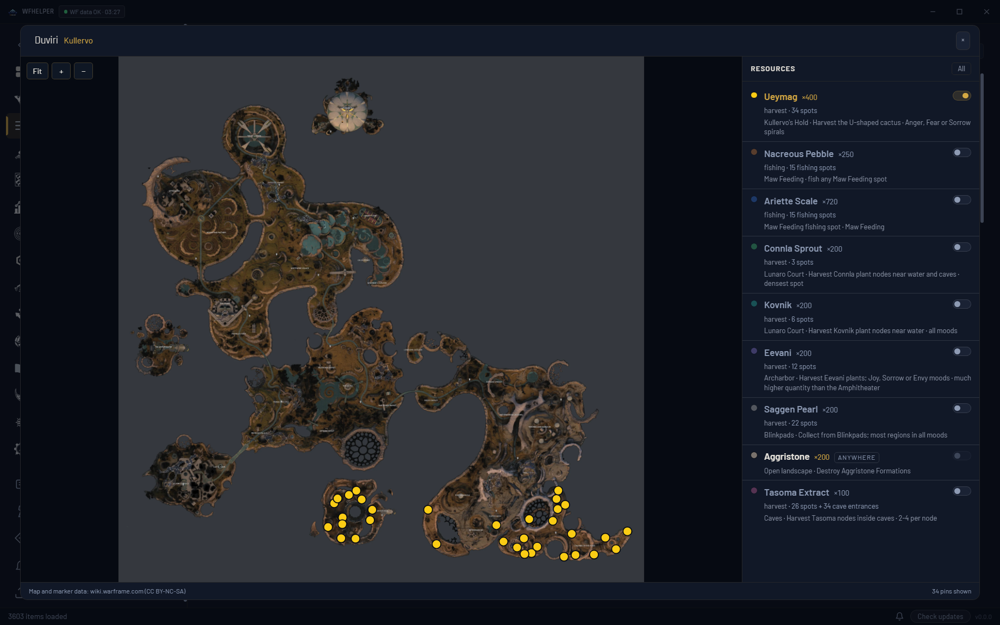
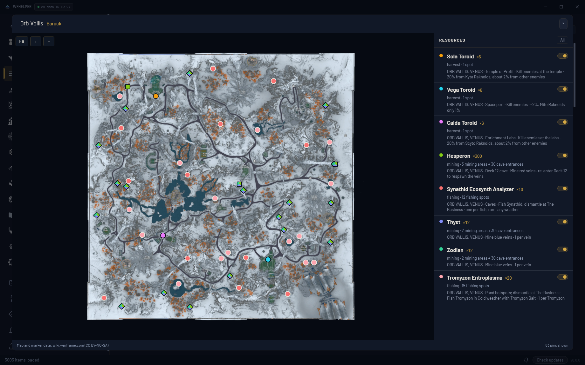
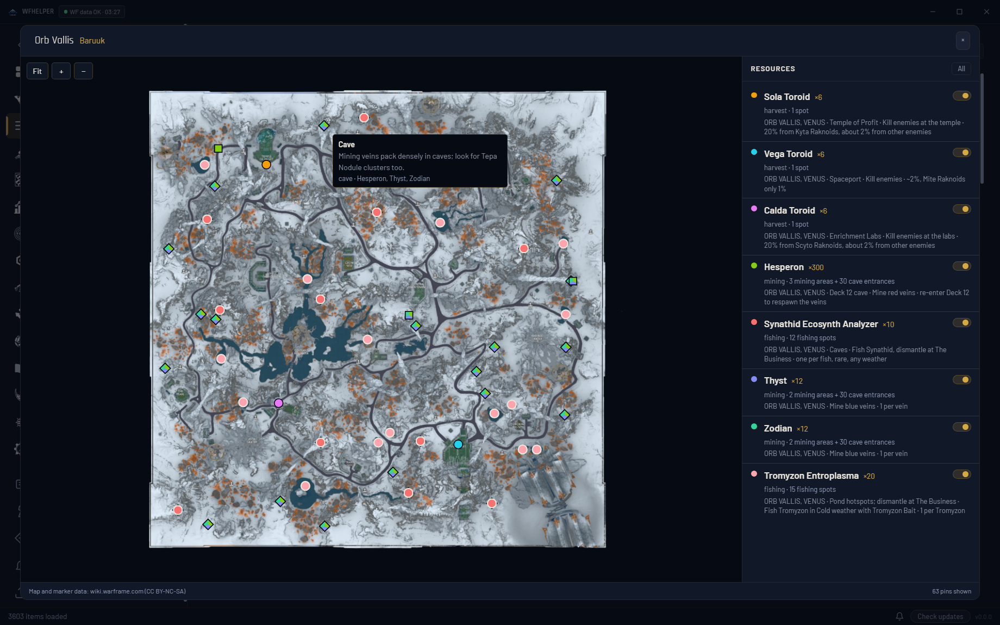
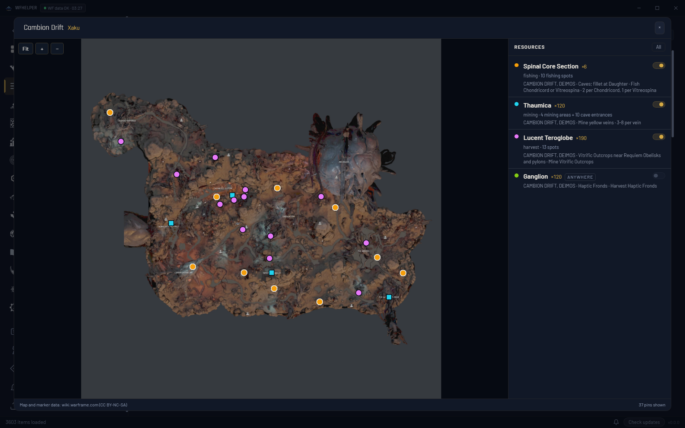
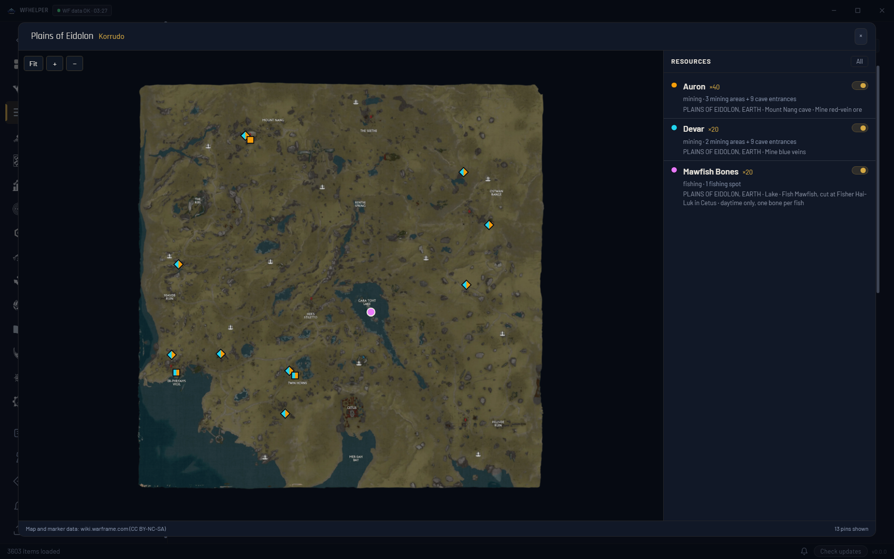

<title>Farm Maps Review</title>
<link rel="stylesheet" href="https://fonts.googleapis.com/css2?family=Barlow:wght@400;600&family=Barlow+Condensed:wght@600&display=swap">
<style>
/* Layout: one column of full-width screenshots, caption above each. Single dark look, matching the app. */
:root {
  --bg: #0a0e17; --surface: #111827; --line: rgba(212,168,67,.18);
  --fg: #e8e4dc; --muted: #8b93a5; --accent: #d4a843;
  --display: "Barlow Condensed", "Arial Narrow", sans-serif;
  --body: "Barlow", system-ui, sans-serif;
  color-scheme: dark;
}
body { background: var(--bg); color: var(--fg); font: 15px/1.5 var(--body); }
main { max-width: 1200px; margin: 0 auto; padding-inline: 16px; padding-block: 28px 48px; display: grid; gap: 36px; }
h1 { font: 600 1.9rem/1.1 var(--display); letter-spacing: .02em; margin: 0; text-wrap: balance; }
.lede { color: var(--muted); margin: 6px 0 0; max-width: 65ch; }
figure { margin: 0; display: grid; gap: 10px; }
figcaption { display: grid; gap: 2px; min-width: 0; }
.k { font: 600 .75rem/1.2 var(--body); text-transform: uppercase; letter-spacing: .1em; color: var(--accent); }
.d { color: var(--muted); font-size: .9rem; max-width: 75ch; }
img { width: 100%; height: auto; border: 1px solid var(--line); border-radius: 4px; background: var(--surface); }
</style>
<main>
  <header>
    <h1>Farm maps in the app</h1>
    <p class="lede">Real app screenshots from the test harness, one plan per map. The map lists only what the plan still needs to gather there, with every resource on to start. Taken before the last polish pass, which spreads out pins that sit on the same spot and matches the grey edges around Duviri and the Cambion Drift.</p>
  </header>
  <figure>
    <figcaption><span class="k">Duviri · Kullervo</span><span class="d">Plants, Maw fishing spots, caves for Tasoma and the 19 Blinkpads for Saggen Pearl. Aggristone is tagged "anywhere".</span></figcaption>
    
  </figure>
  <figure>
    <figcaption><span class="k">Duviri · one resource</span><span class="d">Clicking a name shows only that resource; "All" brings everything back.</span></figcaption>
    
  </figure>
  <figure>
    <figcaption><span class="k">Orb Vallis · Baruuk</span><span class="d">Toroids, servofish by pond, lake and cave, ores at caves and the wiki's mining hotspots (squares).</span></figcaption>
    
  </figure>
  <figure>
    <figcaption><span class="k">Orb Vallis · pin detail</span><span class="d">Hovering a pin lists every needed resource it serves.</span></figcaption>
    
  </figure>
  <figure>
    <figcaption><span class="k">Cambion Drift · Xaku</span><span class="d">Weakest wiki data: Requiem Obelisks are exact, caves, pools and mining spots are placed by eye and marked approximate.</span></figcaption>
    
  </figure>
  <figure>
    <figcaption><span class="k">Plains of Eidolon · Korrudo</span><span class="d">Lake, pond and ocean fishing from the wiki, caves, and approximate mining hotspots.</span></figcaption>
    
  </figure>
</main>
